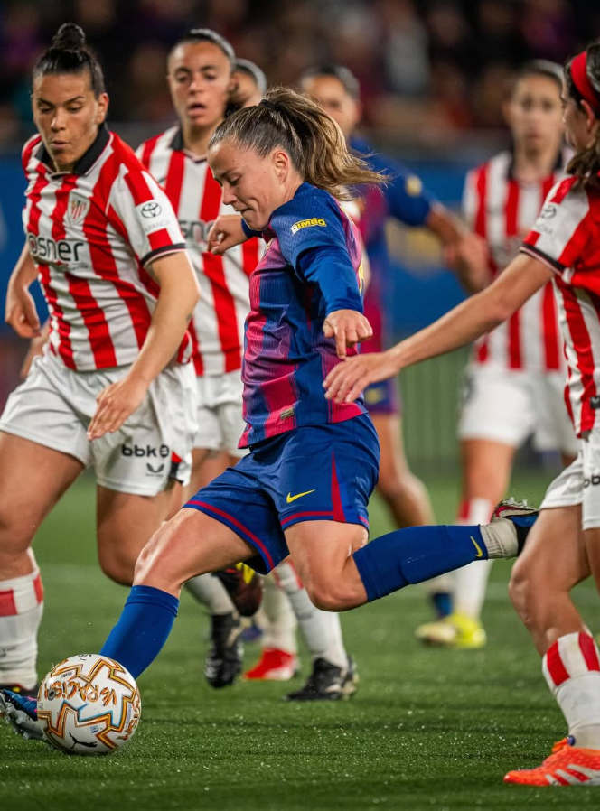
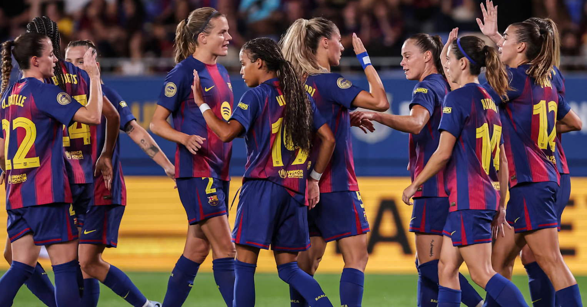
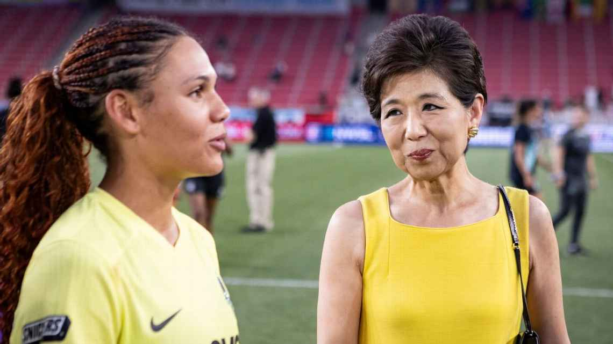

FC Barcelona Femeni Innovation
Recent Findings on Women's Sports

Recent research has shown that the findings from studies conducted on male athletes cannot be used or applied to female athletes.
Due to the differences in anatomy, further research must be conducted on female athletes to make advancements in coaching strategies, sports medicine, and training.
Like other soccer teams and leagues, Barcelona has also started to partake in research to improve performance and health in women's sports.
Recovery of ACL Injuries in Women's soccer

ACL injuries are significantly more common in women's soccer, making recovery a long and carefully structured process. Rehabilitation typically focuses on restoring strength, stability, and neuromuscular control, especially correcting movement patterns that increase knee stress. Successful recovery also depends on load management and individualized planning that considers each athlete's physical and psychological needs. By combining evidence based training, consistent screening, and coordinated support from medical and coaching staff, players can return to the team more confidently.
Read More HereMenstruation and Injury Correlation in Female Footballers

A four season long study of elite women's soccer players found that injury likelihood shifts across menstrual-cycle phases, with certain hormonal periods showing higher rates of soft-tissue issues. Tracking individual cycles may help teams adjust training and recovery plans to reduce risk of injury and better protect athletes.
Read More HereKang's $50 Million Investment in Female Athletes' Health

Michele Kang is committing $50 million to advance research and resources focused on women athletes, aiming to address gaps in how their health and performance are studied and supported. This investment will help build programs and fund research designed to improve training methods, injury prevention, and overall care specifically for female athletes worldwide.
Read More HereFuture changes to Women's Sports

Women's sports is a rapidly growing part of the entire sports industry, driven by the recent increased investment, media attention, and fan engagement. The article highlights how this growth is changing who profits from sports by creating new opportunities for athletes, brands, and emerging leagues while also challenging traditional business model.
Read More Here